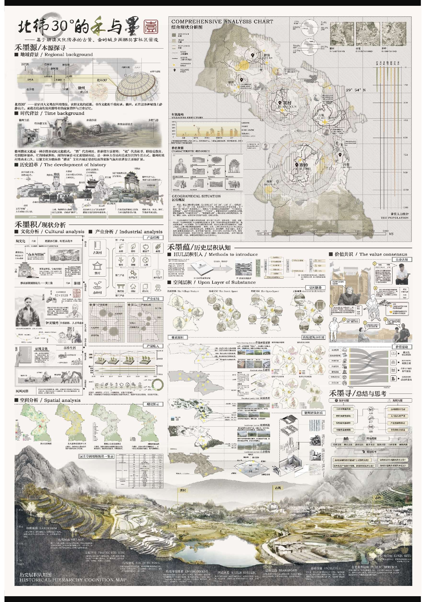
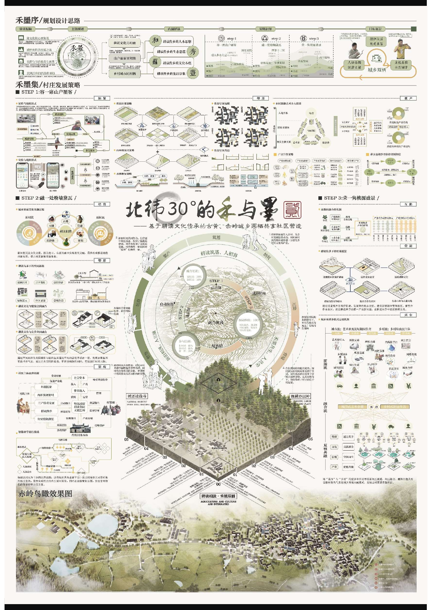
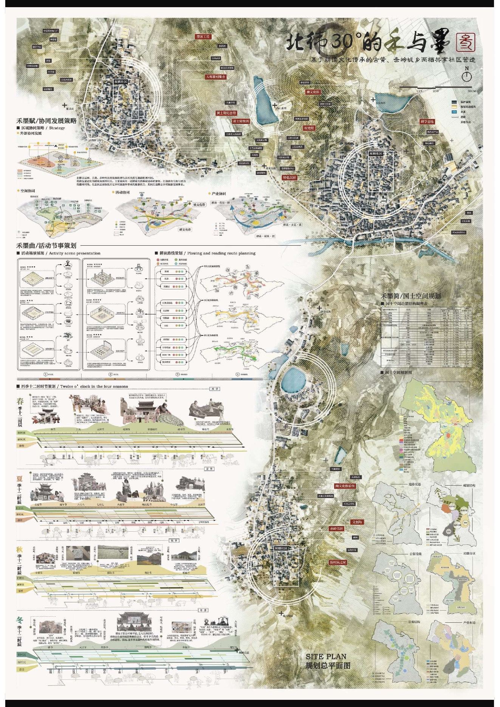
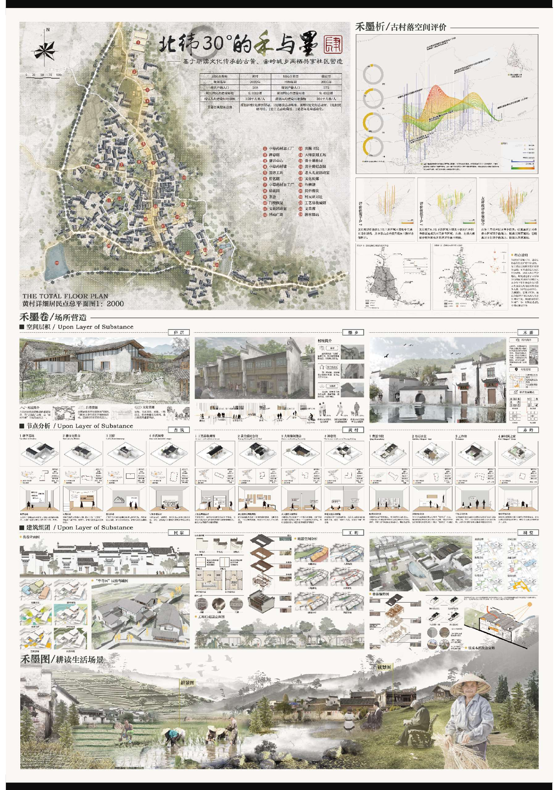
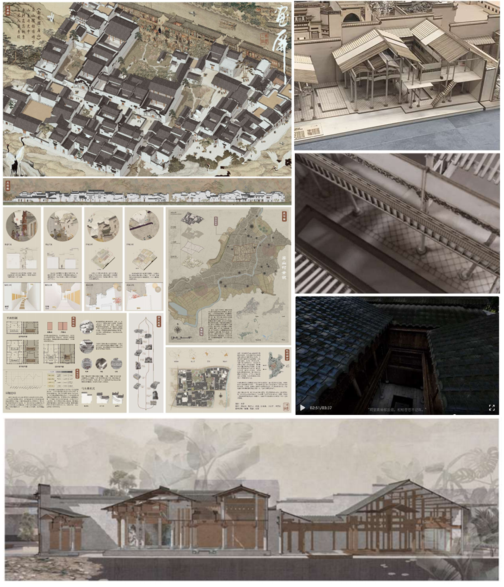

← 返回项目索引
视觉与空间设计
收录平面视觉作品、文化空间方案及建筑场景表达。各组作品保留原图，便于查看版式、图纸和场景细节。
类型平面视觉 / 文化空间 / 场景设计
来源平面与空间设计作品
展示作品图与原展板
01 / VISUAL DESIGN
平面视觉与海报
收录文创、海报与展板设计，涉及主题提炼、图形组织、色彩搭配和信息排版。

02 / CULTURAL SPACE
文化空间设计
“北纬30°的禾与墨”方案包含背景研究、场地分析、概念策略、总体规划与建筑场景设计。下方展示原作品集的四张展板。




03 / SCENE & SPACE
场景与空间表达
整理建筑模型、空间图纸和场景效果图，呈现建筑布局与环境关系。
